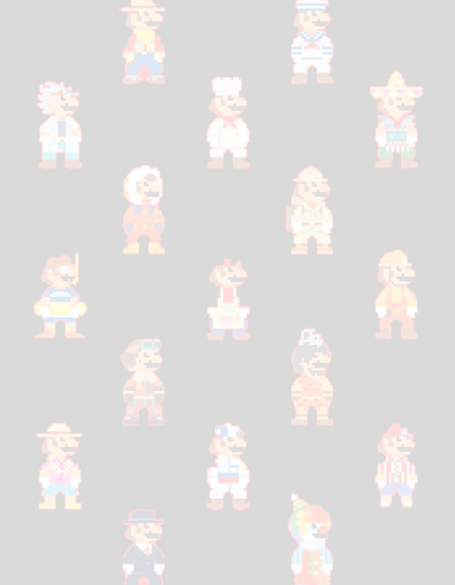

A Playstation é uma série de consoles de videogame criada e desenvolvida pela Sony Computer Entertainment, abrangendo a quinta, sexta, sétima, oitava e nona gerações de videogames. A marca foi lançada pela primeira vez em 3 de dezembro de 1994 no Japão.

O Xbox é um console de vídeo game produzido pela Microsoft. Foi lançado em 15 de novembro de 2001 na América do Norte, 22 de fevereiro de 2002 no Japão, e 14 de Março de 2002 na Austrália e Europa. Foi a primeira incursão da Microsoft no mercado de vídeo games.
A Nintendo foi fundada no dia 23 de setembro de 1889 por Fusajiro Yamauchi em Kyoto, no Japão, como fabricante de um jogo de cartas chamado Hanafuda. Em 1969, o herdeiro da companhia, Hiroshi Yamauchi, decidiu expandir o campo de atuação da Nintendo, introduzindo-a no ramo dos jogos.
